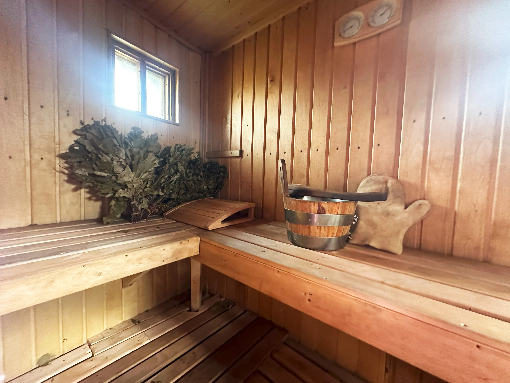
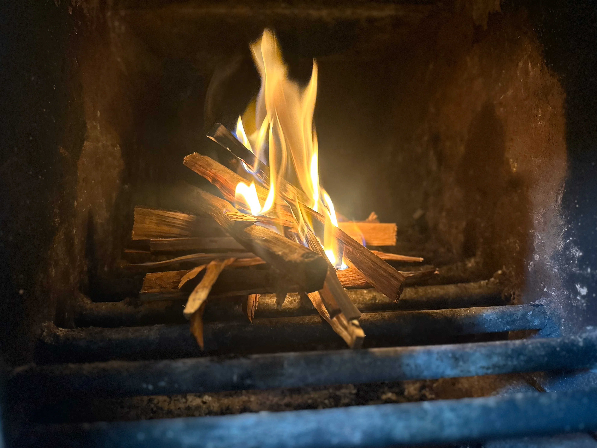
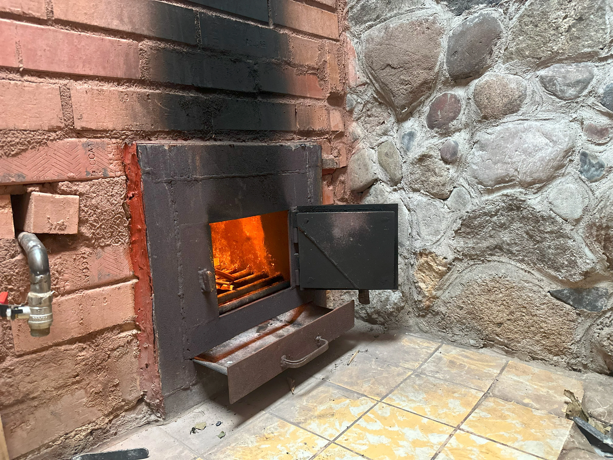
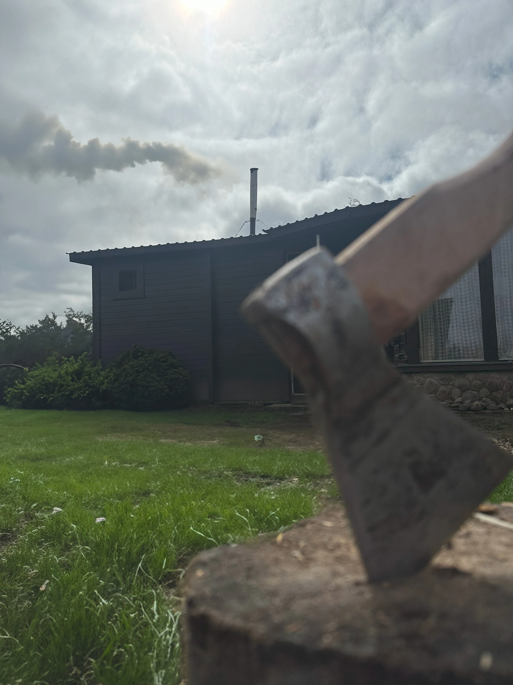
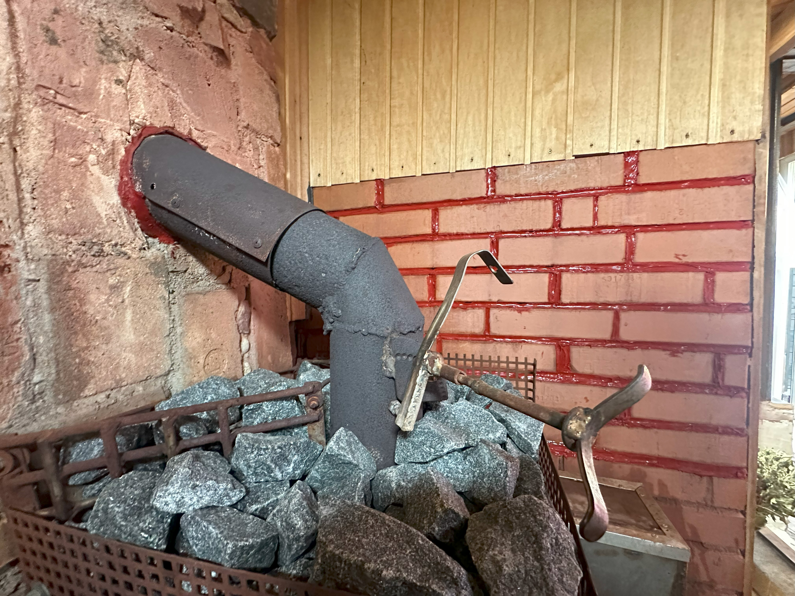
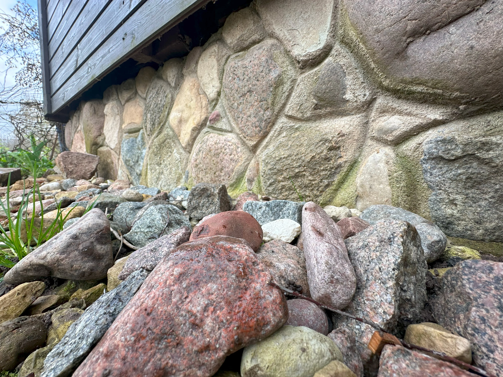
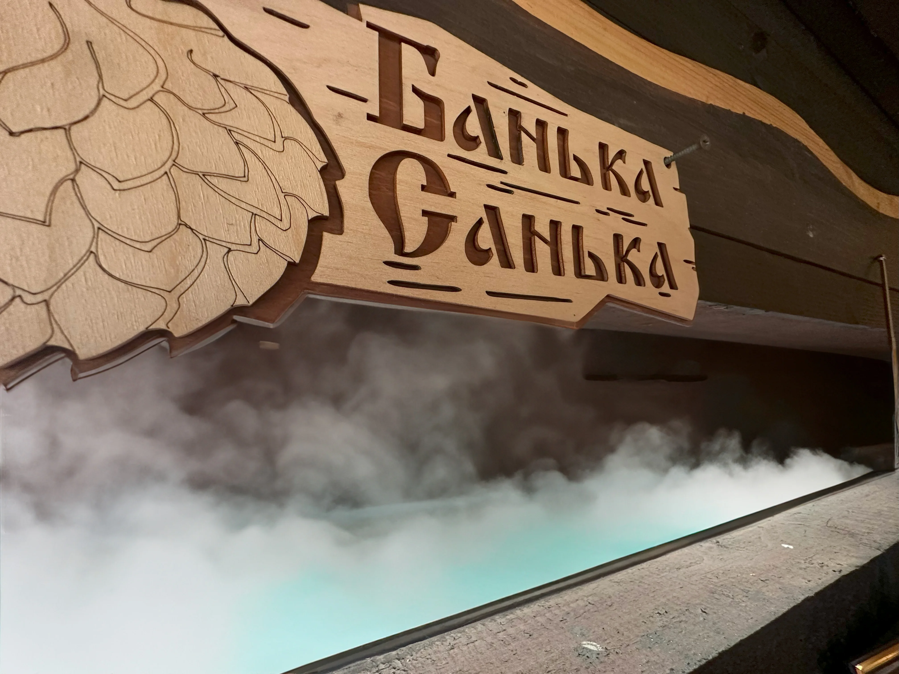
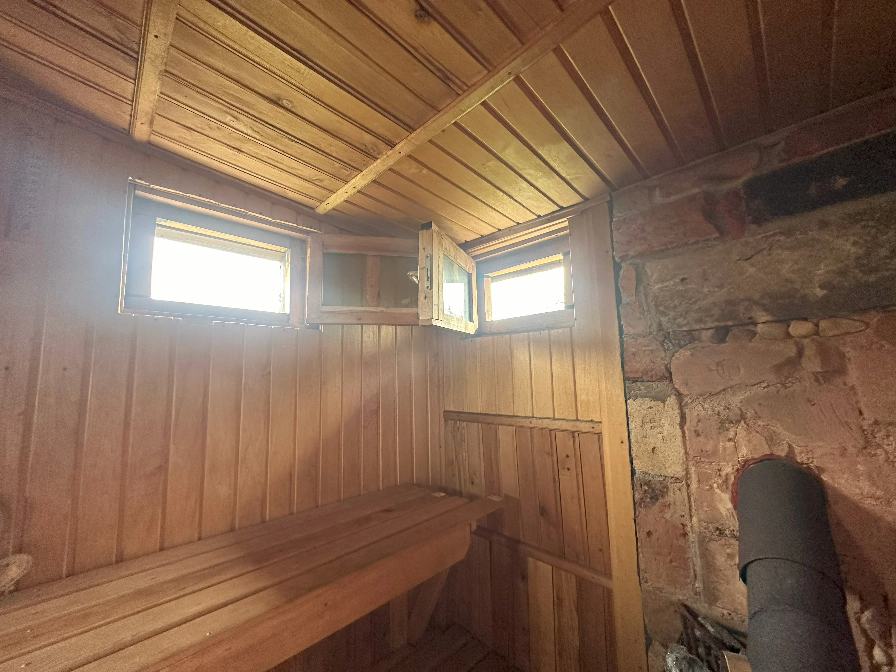

Постройка бани:
парилка и металлическая сварная печь.
Комплексная услугу по строительству бани, которая включает в себя два ключевых элемента: постройку парилки и изготовление металлической сварной печи.
Строительство бани — это всегда уникальный и творческий процесс, где каждый проект является неповторимым. Баня может принимать самые разнообразные формы, отражая индивидуальные предпочтения и нужды её владельца.

Производство металлической печи для бани.
Создание металлической печи для бани – это комплексная услуга, включающая дизайн, изготовление и установку высококачественной печи.
Процесс начинается с выбора металла общей площадью около двух квадратных метров, из которого будет выполнена конструкция печи.
Конструкция печки и материалы.
Металлическая печь вариться из металла разной толщины для оптимальной эффективности и долговечности.
В зонах, где предполагается высокая тепловая нагрузка и прямой контакт с огнем, используется металл толщиной 8 миллиметров. Для остальных частей печи достаточно 6-миллиметрового металла.

Особенности конструкции металличествой печи.
Печь оборудуется колосниками для улучшенной вентиляции и эффективного сгорания дров, а также имеет специальные полости для закладки камней, расположенные в центре и сверху печи. Это позволяет равномерно распределять тепло и создавать идеальные условия для банных процедур.

Дымоотвод металличесвой печи для бани.
Важной частью печи является дымоход, изготовленный из металла толщиной 4,5 миллиметра и имеющий диаметр 150 мм. Это обеспечивает эффективный отвод дыма и снижение риска обратной тяги.

Безопасность установки.
Особое внимание уделяется безопасности установки металлической печи. Все металлические элементы тщательно изолируются и размещаются таким образом, чтобы избежать контакта с деревянными частями бани, предотвращая риск возгорания.

Постройка парилки для бани или сауны.
Создание бани – это комплексный процесс, требующий внимания к каждому этапу сборки от фундамента до крыши. Вот как проходит строительство:
Подготовка основания и фундамент для сауны или бани.
Для начала на глубине одного метра закапывается емкость без дна, заполненная щебенкой. Эта конструкция служит резервуаром для сбора и естественного поглощения воды из парилки и предбанника, что обеспечивает удобство и экологичность использования.
Как основу для фундамента используется каменная кладка – кубический метр крупных камней, связанных между собой бетоном. Это обеспечивает прочность и долговечность всей конструкции.

Заливка пола и возведение стен для сауны
Пол в помещениях бани заливается с учетом их функционального назначения. В помывочной предусмотрена высота в 20 сантиметров, в парилке – двухуровневый пол с интегрированными сливами для воды и металлическими креплениями для установки несущих конструкций.
Стены возводятся из бруса сосны, используются размеры 100x60 мм и 100x100 мм. Парилка дополнительно утепляется минеральной ватой и оборудуется пароизоляционной бумагой, специально разработанной для использования в банях.

Безопасность и внутренняя отделка бани.
В местах, предназначенных для контакта с дымоходом и металлическими элементами, стены выполняются из кирпича, чтобы обеспечить дополнительную огнеупорность и безопасность.
Внутренняя часть бани обшивается лиственной вагонкой, создавая эстетически приятное и теплое пространство. Все внутренние элементы, включая полки и ступеньки, изготавливаются из лиственницы, обеспечивая долговечность и натуральный внешний вид.
